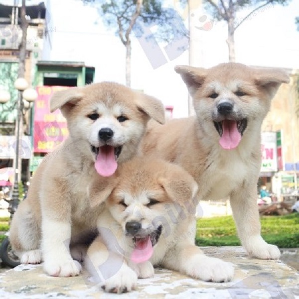
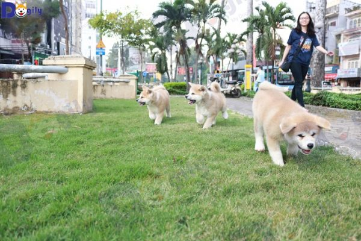

mô tả sản phẩm
Akita Inu
Akita Inu (thường gọi tắt là chó Akita) là bảo vật quốc gia và quốc khuyển của Nhật Bản. Giống chó nổi tiếng về lòng trung thành với những chú chó huyền thoại như Hachiko, Wasao… đã đi vào tiểu thuyết, phim ảnh. Làm lay động hàng triệu trái tim yêu thương.
Akita inu là dòng chó cảnh của giới quý tộc, thượng lưu và chính khách. Trong lịch sử, chúng được nuôi để bảo vệ Nhật hoàng và các gia đình hoàng tộc. Akita Inu còn là cún cưng của Tổng thống Nga Putin và nhiều nhân vật nổi tiếng trên thế giới.
Trong chuyên mục này, Dogily.vn sẽ giới thiệu với các bạn tổng quan về giống chó Akita Inu. Từ lịch sử, nguồn gốc, quê quán, đặc điểm, tính cách. Cho đến cách nuôi và chăm sóc, kinh nghiệm huấn luyện. Và các tin tức, hình ảnh cập nhật mới nhất về giống chó này.
Dogily.vn cũng hướng dẫn bạn cách nhận biết Akita Inu Nhật Bản và chó Akita Mỹ. Cũng như phân biệt với một giống chó Nhật Bản có liên quan khác là Shiba Inu. Thế nào là chó Akita long coat (Akita lông xù, dài)?
Chúng tôi cũng sẽ cùng bạn cập nhật giá bán Akita Inu mới nhất. Kinh nghiệm chọn mua và các địa chỉ bán Akita Inu thuần chủng, giá rẻ nhất tại các thành phố lớn tại Việt Nam. Như Hà Nội, Tphcm, Đà Nẵng, Cần Thơ, Hải Phòng, Quảng Ninh… Hãy cùng đón đọc nào.
Tính cách
Akita Inu có tính cách rất thân thiện, thận trọng và cực kì tình cảm. Tuy nhiên, chúng có tư duy khá độc lập nên nhiều khi hành động tương đối tự phát. Chúng luôn thích được ở cùng trong gia đình chứ không phải ở một cái chuồng nhốt riêng biệt. Akita Inu là thú cưng tuyệt vời đối với trẻ em. Tuy nhiên, chúng không mấy thân thiện với người lạ. Con của bạn cần phải được dạy đỗ để học cách cư xử nhẹ nhàng, thân thiện với Akita Inu trong gia đình.
Khi nuôi Akita Inu, bạn cần giám sát hành vi của chúng với các vật nuôi khác trong gia đình. Nếu bị kích động, Akita Inu có thể cắn. Vốn là một giống chó săn, nên các vật nuôi nhỏ như nhím, sóc, hamster, chuột cảnh… rất dễ bị tấn công. Chính vì vậy, bạn cần xã hội hóa Akita Inu ngay từ khi còn nhỏ. Để kiểm soát hành vi không mong muốn sau này của chúng.
CAkita Inu không mấy tập trung và nhanh chán. Vì vậy, để huấn luyện Akita Inu vâng lời đòi hỏi chủ nhân cần hết sức kiên trì. Giống chó này cực kì trung thành và ngọt ngào. Tuy nhiên, bạn cần phải hiểu tính cách và tập tính của chúng để dạy dỗ, huấn luyện Akita Inu của mình trở nên hoàn hảo.
